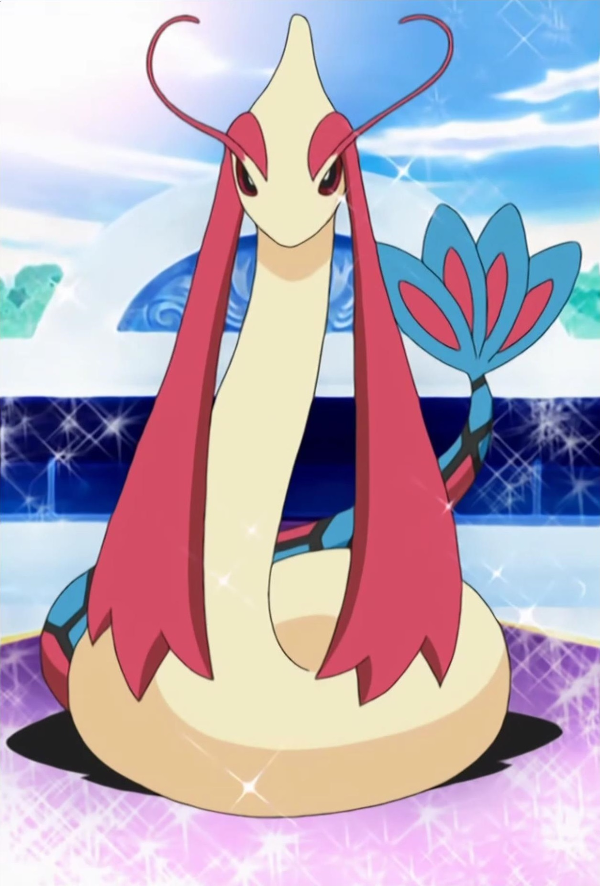

Chie Satou is a Japanese voice actress. She has does various characters on Pokemon and Bo-chan from Crayon Shin-chan.
- Gender: Female
- Birthday: July 1, 1964
- Hometown: Saitama, Japan
- Hobbies: Diving, Japanese dance and Skiing

|
|---|
| |
Chie Satou is a Japanese voice actress. She has does various characters on Pokemon and Bo-chan from Crayon Shin-chan.
|
|---|
| Nicholai | Pokemon Advanced Generations | Nicholai is a Pokemon Trainer in Hoenn who is obsessed with knickerbockers and cosplaying as Pokemon. He is to be overexcited, adventurous and lunt to a point where it irritates others. He considers himself a naturalist and has an in-depth knowledge of Pokemon behavior. | |
 |
Otane | Pokemon Advanced Generations | Otane is Kelly's mother who owns a Pokeblocks shop. She shows trainer how to make their own Pokeblocks. |
 |
Tommy | Pokemon Advanced Generations | Tommy is a Pokemon Trainer trying to find his Marshtomp from several years ago. He returns to the Forsaken Ship to reclaim his missing Marshtomp. Chie Satou voiced younger Tommy. |
 |
Victoria Winstrate | Pokemon Advanced Generations | Victoria Winstrate is the mother to Vivi and wife to Victor Winstrate. Her family is obsessed with Pokemon battles. Her Pokemon partner is Roselia. |
|  | Milotic | Pokemon Advanced Generations | Milotic is a Pokemon from the Hoenn region. It evolves from Feebas. When there are fighting going on, it has the power to calm angry feeling and end arguments by releasing a wave of energy. Chie Satou voiced Lucy's Milotic. |
 |
Spoink | Pokemon Diamond and Pearl | Spoink is a Pokemon from the Hoenn region. The pearls amplifies its psychic power. Spoink will be weakened without a pearl. |
 |
Umbreon | Pokemon: Eevees and Friends | Umbreon is a Pokemon from the Johto region. Umbreon is an evolved form of Eevee. When it gets agitated, it can release a poisonous sweat. |
Go Back to Main Page |
Go Back to Homepage |
|
|
|
OR |
|